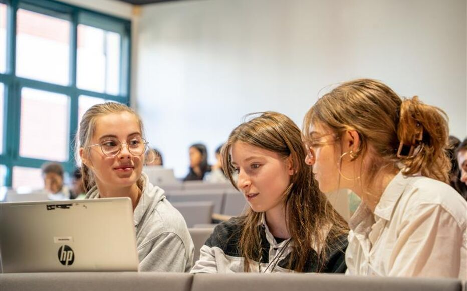

Le Cycle Ingénieur, d'une durée de trois ans (quatre avec double-diplôme), permet à chaque étudiant de personnaliser son parcours en choisissant parmi quatre filières spécialisées (Information Technology, Sécurité et Réseaux, Data Science, Systèmes Embarqués). La première année (ING1) sert de tronc commun pour harmoniser les connaissances. Elle inclut obligatoirement un semestre à l'international et un semestre de cours sur les campus de Paris ou de Bordeaux.
1ère année du cycle ingénieur : s’ouvrir au monde et choisir sa voie

Cycle Ingénieur – 1ère année
Cette année de tronc commun se compose d'un semestre à l'international dans le cadre de la mobilité étudiante et d'un semestre de cours à Paris. À son issue, les élèves peuvent choisir une des 13 majeures proposées au sein des 4 filières de l'école en vue de se spécialiser dans un domaine précis du numérique.